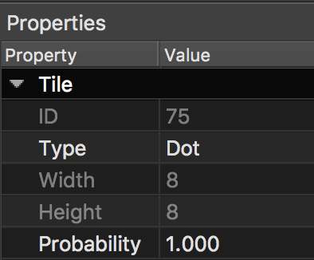

View on GitHub
View on GitHub Install in Dash
Install in Dash Extending Reference
Extending Reference
Extending SKTiled
Custom Objects
SKTiled allows you to use custom classes in place for the default tile, vector object and pathfinding graph nodes. Any class conforming to the SKTilemapDelegate protocol can access methods for returning custom object types:
class GameScene: SKScene, SKTilemapDelegate {
func objectForTileType(named: String?) -> SKTile.Type {
return SKTile.self
}
func objectForVectorType(named: String?) -> SKTileObject.Type {
return SKTileObject.self
}
func objectForGraphType(named: String?) -> GKGridGraphNode.Type {
return GKGridGraphNode.self
}
}
Tiled Object Types

You aren’t restricted to one object type however, the parser reads the custom type attribute of tiles and objects in Tiled, and automatically passes that value to the delegate methods:
class Dot: SKTile {
let score: Int = 10
let ghostMode: GhostMode = .chase
}
class Pellet: Dot {
let score: Int = 50
let ghostMode: GhostMode = .flee
}
class Maze: SKScene, SKTilemapDelegate {
// customize the tile type based on the `named` argument
override func objectForTileType(named: String?) -> SKTile.Type {
if (named == "Dot") {
return Dot.self
}
if (named == "Pellet") {
return Pellet.self
}
return SKTile.self
}
}